Como preparar e dirigir o Estudo de A Sentinela no tempo certo
Versão 4.0 · novembro de 2026
⚠ Dois avisos importantes
Dirija sempre com a publicação original. O aplicativo mostra os parágrafos e as perguntas só para calcular os tempos. O dirigente nunca deve se guiar pelo conteúdo que aparece no cronômetro: para apresentar a informação à assistência, use sempre o aplicativo JW Library ou a revista A Sentinela impressa.
Durante o estudo, use o modo apresentação. É a forma recomendada de usar o cronômetro enquanto você dirige, porque evita distrações: mostra só o necessário, com as cores verde, amarelo e vermelho para você ver num relance como está o tempo, e botões grandes e fáceis de tocar para passar ao próximo parágrafo e marcar os comentários (seção 9).
O Cronômetro do Estudo ajuda o irmão que dirige o Estudo de A Sentinela a distribuir bem o tempo e terminar no horário.
Você carrega o artigo da semana em PDF e o aplicativo:
lê o artigo e encontra os parágrafos, as perguntas, os textos a serem lidos, as imagens, as notas e as perguntas de recapitulação;
calcula quanto tempo dedicar a cada parte: introdução, cada parágrafo, recapitulação e conclusão;
guia você durante o estudo com um cronômetro por parágrafo e cores que mostram se você está no tempo, na tolerância ou com o tempo excedido;
se reajusta sozinho: se um parágrafo demorar mais, ele distribui o tempo que sobra entre os seguintes para que você termine no horário.
Aplicativo não oficial. É um projeto gratuito e independente. Não é uma publicação oficial nem tem relação com o jw.org ou com a organização das Testemunhas de Jeová. O artigo é analisado no seu próprio aparelho: não é enviado nem guardado em nenhum servidor.
As imagens deste manual usam um artigo de exemplo inventado, não um artigo real de A Sentinela.
2Instalar o aplicativo
O ícone do aplicativo é um livro laranja com um medidor colorido (verde, amarelo e vermelho) sobre fundo preto.
Se você já usa o aplicativo no navegador de um aparelho Android, a tela inicial mostra o cartão verde “Usa Android?” com o botão “Abrir no Google Play”.
iPhone e iPad
Ainda não está na App Store, mas funciona igual pela internet:
Toque no botão Compartilhar (o quadrado com uma seta para cima).
Escolha “Adicionar à Tela de Início” e toque em Adicionar. O ícone vai aparecer na sua tela.
Computador
Abra temporizador-estudio.vercel.app no Chrome ou no Edge. Se quiser, instale como um programa usando o ícone de instalar na barra de endereços.
Atualizações: quando houver uma versão nova, aparece um aviso com o botão Atualizar. O aplicativo nunca se atualiza sozinho no meio de um estudo.
3A tela inicial
É a primeira coisa que você vê ao abrir o aplicativo. Os números vermelhos da imagem mostram onde fica cada coisa.
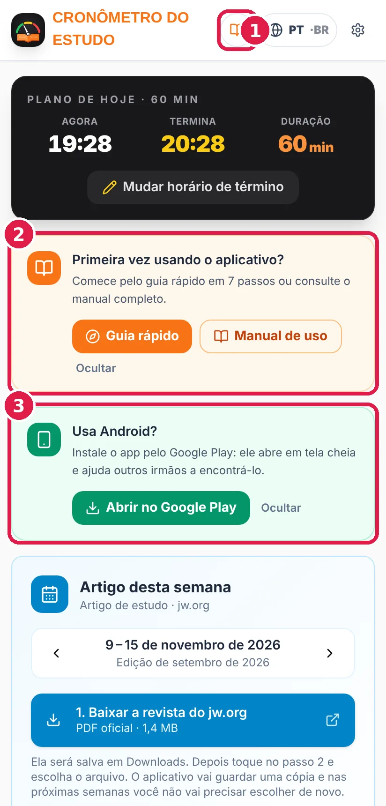
Tela inicial.
Botão do livro: abre este manual a qualquer momento.
“Primeira vez usando o aplicativo?”: abre o guia rápido ou este manual. Quando já conhecer o aplicativo, toque em Ocultar.
“Usa Android?” (só em celulares Android que usam o navegador): instale o aplicativo pelo Google Play. Este cartão também pode ser ocultado.
Mais abaixo você encontra:
Programa de hoje: a hora atual, a hora em que o estudo termina e quanto dura.
Artigo desta semana: para baixar a revista e abri-la (seção 4).
Visita do superintendente de circuito: o botão para o estudo de 30 minutos (seção 13).
Configurações do estudo: um resumo das suas configurações, com o link para editar.
Bem no final, os links de privacidade, manual, Google Play e histórico de estudos.
Em cima também estão o idioma (PT) e as configurações⚙.
4Carregar o artigo da semana
O cartão “Artigo desta semana” mostra a semana atual (por exemplo, 9-15 de novembro de 2026) e a edição de A Sentinela que a contém. Com as setas ‹› você pode escolher outra semana.
“1. Baixar a revista do jw.org” abre o PDF oficial da edição correspondente. No Android, ele é salvo em Downloads; no iPhone, toque em Compartilhar → “Salvar em Arquivos”.
“2. Escolher o PDF baixado”: selecione esse arquivo. O aplicativo procura na revista o artigo da semana escolhida e o analisa. Depois de tocar no passo 1, ao voltar ao aplicativo este botão fica verde (“Já baixou? Toque aqui para abrir”): basta um toque.
A Sentinela é baixada no idioma do aplicativo. Se o aplicativo está em português, é baixada a edição em português; se está em inglês, a edição em inglês, e assim por diante em todos os idiomas. Para baixar outro idioma, mude primeiro o idioma do aplicativo (seção 14). Em português, é baixada a edição de Portugal ou a do Brasil, conforme a sua escolha.
O aplicativo guarda uma cópia da revista. As semanas seguintes da mesma edição abrem direto com “Abrir o artigo desta semana”, sem baixar nada de novo. As revistas guardadas são apagadas sozinhas 3 meses depois da sua última semana.
No computador, você também pode arrastar o PDF para qualquer parte da tela inicial (aparece o aviso “Solte aqui o PDF de A Sentinela”) ou escolher a pasta onde guarda as revistas, e o aplicativo vai encontrá-las sozinho.
Diz que a revista ainda não foi publicada? O jw.org publica cada edição algumas semanas antes. Se você escolher uma semana muito distante, talvez ela ainda não esteja disponível.
5O resumo e o programa do estudo
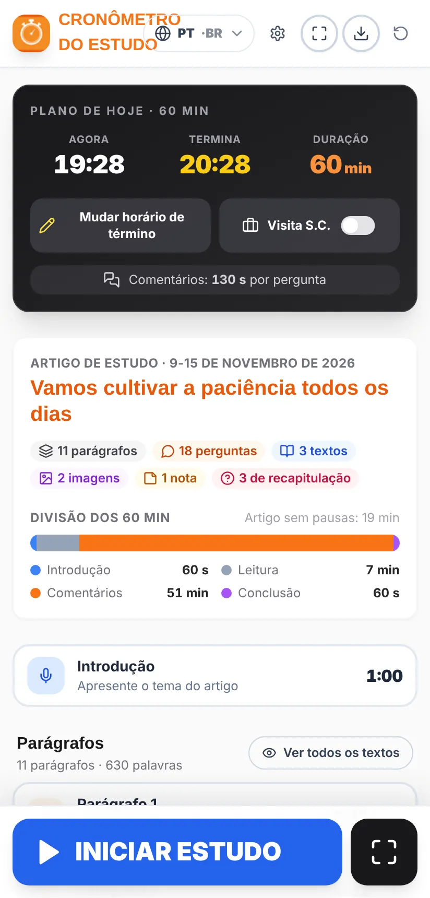
O programa de hoje.
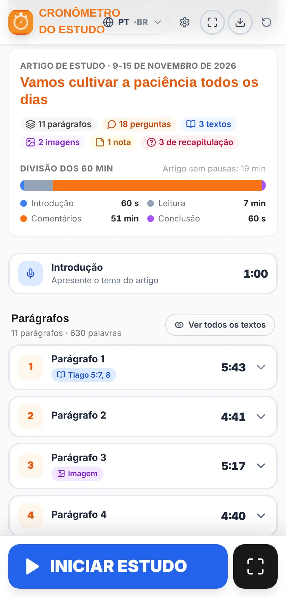
O resumo do artigo.
Hora de término: a hora em que o estudo termina.
“Mudar horário de término”: use quando o discurso público termina atrasado (veja o quadro abaixo).
Quando mudar o horário de término? A reunião dura 1 hora e 45 minutos: cântico e oração (5 min), discurso público (30 min), cântico (5 min), Estudo de A Sentinela (60 min) e cântico e oração final (5 min).
Se o discurso terminar atrasado, esses minutos são tirados do Estudo de A Sentinela. Antes de começar o estudo, toque em “Mudar horário de término” e escreva a hora em que o estudo deve terminar para a reunião acabar na hora (5 minutos antes do fim, para o cântico e a oração). Tudo é recalculado para terminar nessa hora.
Se o discurso terminar na hora ou antes, não mude nada: o estudo dura seus 60 minutos e a reunião pode terminar um pouco antes, mas nunca depois. Por isso o aplicativo nunca deixa o estudo mais longo do que o configurado.
Logo abaixo, o resumo do artigo mostra:
o título e a semana;
quantos parágrafos, perguntas, textos, imagens e notas ele tem;
uma barra colorida com a divisão do tempo: IntroduçãoLeituraComentáriosConclusão.
O programa também diz “Comentários: X s por pergunta”: o tempo médio para responder cada pergunta.
Se o artigo não couber no tempo escolhido, aparece um aviso. Você pode aumentar a duração ou escolher uma leitura mais rápida nas Configurações.
6A lista de parágrafos
Cada parágrafo aparece numa linha com o seu número e o seu tempo previsto. Toque num parágrafo para abri-lo.
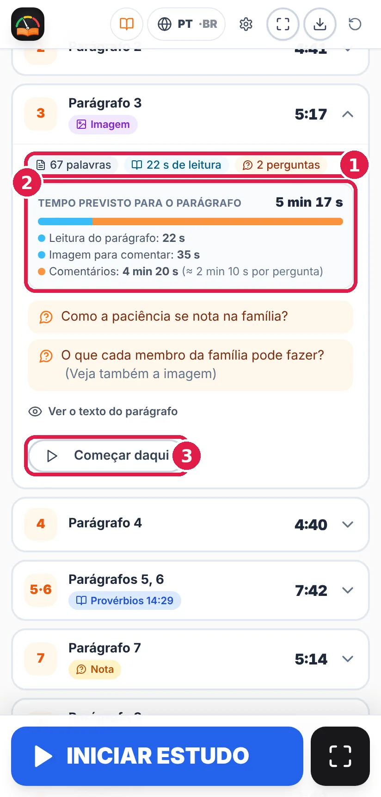
Um parágrafo aberto.
Dados do parágrafo, cada um com sua cor: palavras (cinza), tempo de leitura (azul) e perguntas (laranja). Durante o estudo, aparece também o horário previsto (roxo).
Tempo previsto para o parágrafo: o total e como ele se divide. A barra mostra a leitura do parágrafo (azul), os comentários (laranja) e, nos parágrafos longos, um extra para mais comentários (verde). Se houver um texto para ler, uma imagem ou uma nota, é a assistência que comenta: eles aparecem dentro dos comentários, embaixo das perguntas (por exemplo “Texto para ler: 35 seg”). As partes somadas dão o total.
“Começar daqui”: se o estudo já começou (por exemplo, se você chegou atrasado), vai direto para este parágrafo.
As etiquetas coloridas avisam o que você precisa levar em conta:
Etiqueta
O que significa
Tiago 5:7, 8
Há um texto para ler.
Imagem
A pergunta fala de uma imagem do artigo.
Nota
Há uma nota para comentar.
★ Ponto principal
A pergunta menciona um quadro ou uma ideia entre aspas.
Com “Ver o texto do parágrafo”, você pode ler o texto para preparar os tempos. Para dirigir, use sempre a publicação original.
Os parágrafos que têm a mesma pergunta (por exemplo “5, 6”) vão juntos, e o botão Próximo passa o grupo inteiro.
7Dirigir o estudo passo a passo
Recomendado: durante o estudo, use o modo apresentação (seção 9). Aqui explicamos como funciona; é igual nas duas telas.
No celular, os botões principais ficam sempre embaixo:
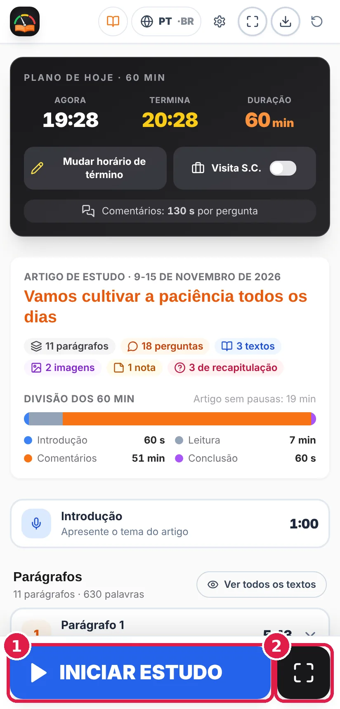
Antes de começar.
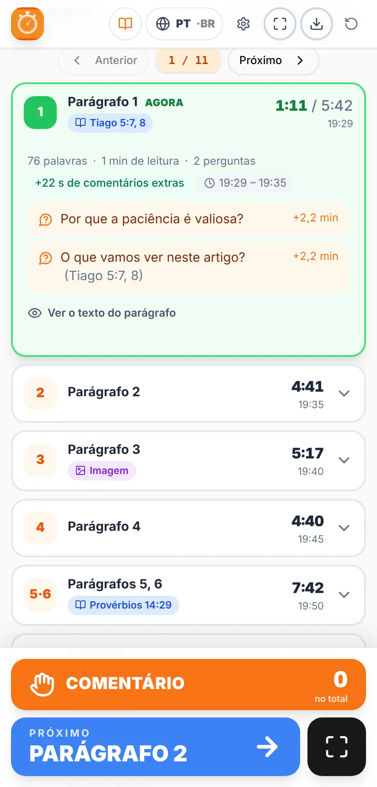
Durante um parágrafo.
Botão azul grande: diz o que vem a seguir. Toque nele cada vez que passar para outra parte: Iniciar estudo → Parágrafo 1 → Parágrafo 2 → … → Recapitulação → Conclusão → Encerrar estudo.
Botão preto⛶: abre o modo apresentação.
Durante os parágrafos aparece também o botão laranja ✋ COMENTÁRIO: toque nele cada vez que alguém comentar. No final, você vai ver quantos comentários houve.
Introdução. Toque em “Iniciar estudo”. Começam a contar o cronômetro geral e o da introdução.
Parágrafos. Toque em Próximo no começo de cada parágrafo. Você vê o tempo que passou e o tempo previsto (por exemplo 1:11 / 5:43) e a cor (seção 8).
Perguntas de recapitulação. Depois do último parágrafo vêm as perguntas do quadro final.
Conclusão. Dura exatamente o tempo que falta até o horário de término: se sobrar tempo, usa tudo, mesmo que seja mais do que o minuto das Configurações, e se faltar, fica mais curta. Se passar do horário de término, fica vermelha.
Encerrar estudo. O cronômetro para e o relatório do estudo é salvo (seção 15).
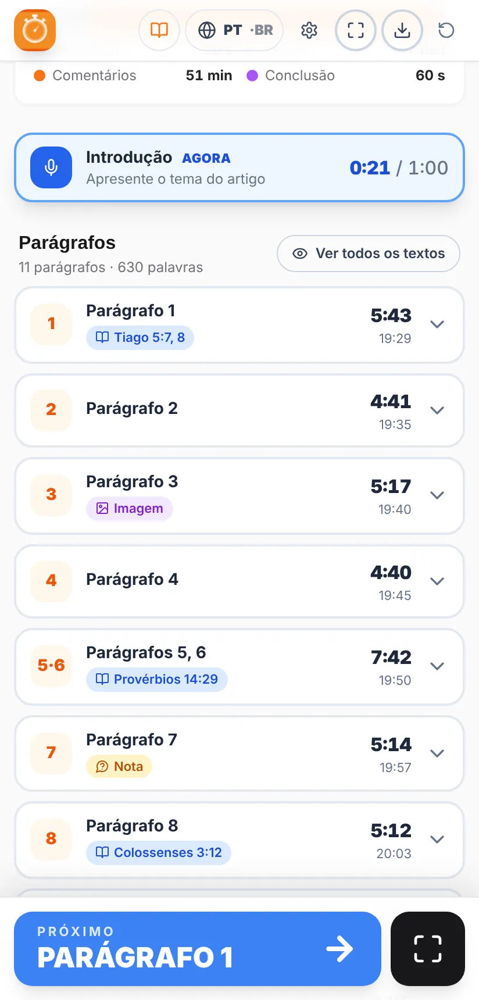
Introdução em andamento.
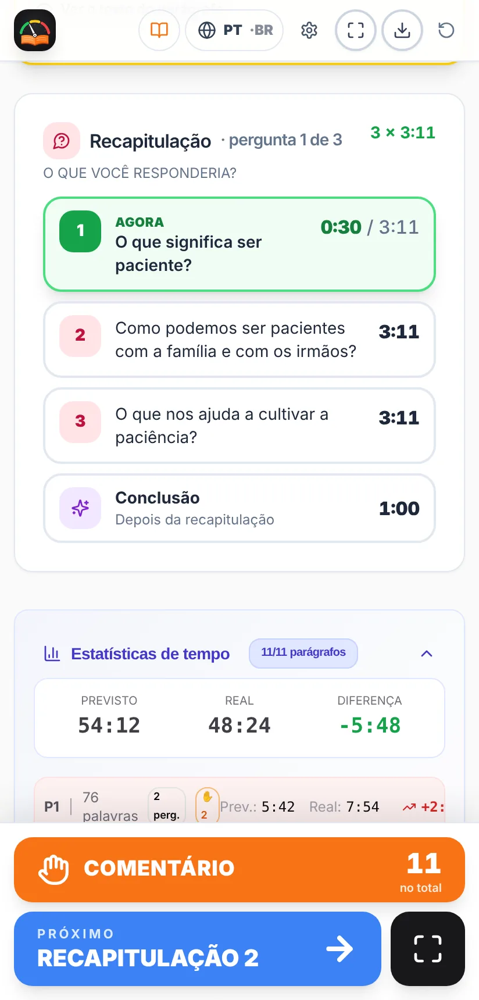
Perguntas de recapitulação.
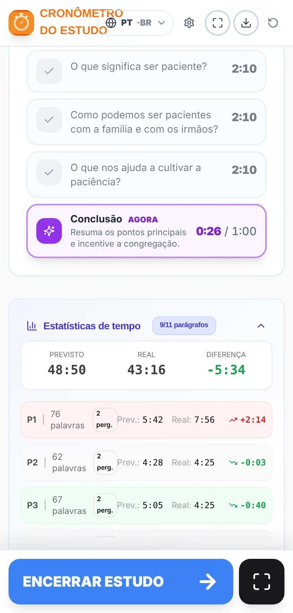
Conclusão.
Com o botão ⏸ do programa, você pode pausar o cronômetro se houver uma interrupção. Na pausa, para o cronômetro da parte atual, mas o horário de término não muda: o tempo que falta continua diminuindo, porque a reunião termina na hora.
8As cores: verde, amarelo e vermelho
O cartão da parte em andamento (parágrafo, introdução, pergunta de recapitulação ou conclusão) muda de cor conforme o tempo usado:
Cor
Quando
O que fazer
NO TEMPO
Até o tempo previsto.
Tudo bem: continue assim.
TOLERÂNCIA
Passou do tempo, mas não mais que 30%.
Vá encerrando os comentários.
EXCEDIDO
Mais de 30% acima do previsto.
Passe para o próximo parágrafo.
No tempo.
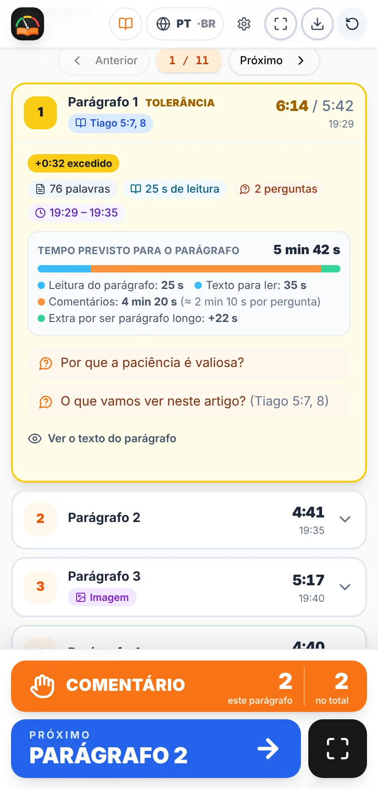
Tolerância, com o tempo excedido.
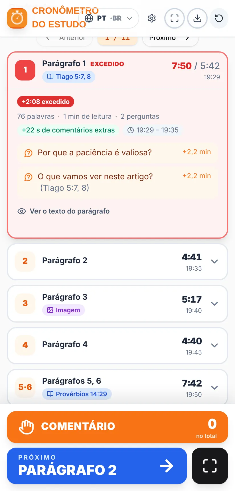
Excedido.
Nos últimos 5 minutos do estudo, os parágrafos e as perguntas de recapitulação não têm tolerância: passam direto do verde para o vermelho, para não tirar tempo do final. A conclusão sempre mantém a sua tolerância.
Se uma parte demorar mais, não tem problema: ao tocar em Próximo, o aplicativo volta a distribuir o tempo que sobra entre o que falta, para terminar no horário.
O botão “Próximo” também avisa
Quando a parte atual fica vermelha, o botão grande para avançar também muda, para você perceber sem precisar procurar:
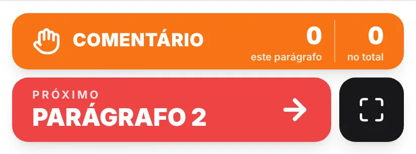
Vermelho: ainda dá para recuperar.
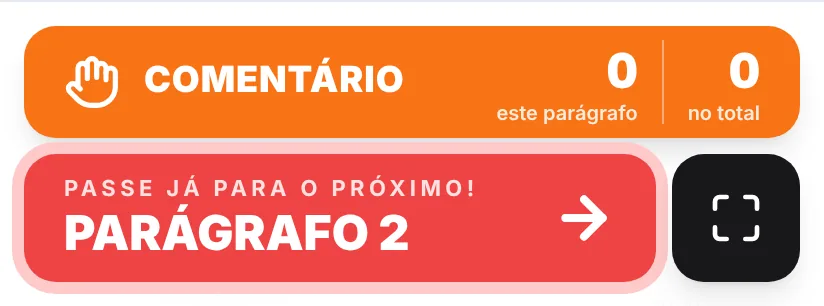
Piscando: passe já para o próximo.
Botão vermelho: a parte passou do tempo, mas ainda dá para recuperar no que falta. Comece a encerrar os comentários.
Botão vermelho piscando com “Passe já para o próximo!”: já não dá para recuperar o tempo (sobrariam menos de 30 segundos para cada pergunta que falta, ou você está nos últimos 5 minutos). Passe para o próximo assim que puder.
No modo apresentação o botão fica branco com letras vermelhas, para aparecer bem em qualquer cor de fundo.
Se não quiser, desligue em Configurações → Avisos → “Botão ‘Próximo’ vermelho”.
9O modo apresentação
É a forma recomendada de dirigir o estudo. Mostra só o essencial, com letras e botões grandes, e a cor mostra de relance como você está de tempo.
Abre com o botão ⛶ embaixo e fecha com o ✕ em cima (ou com o botão “voltar” do celular, sem sair do aplicativo).
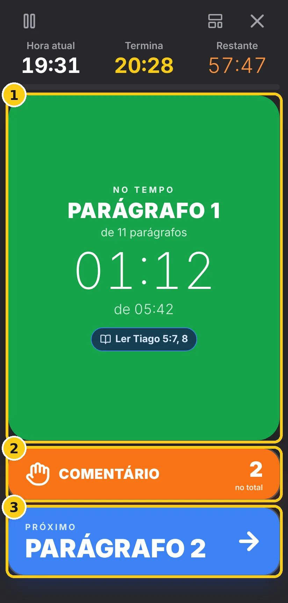
O modo apresentação durante um parágrafo.
Quadro colorido: onde você está (por exemplo Parágrafo 1), o cronômetro dessa parte e o tempo previsto. Fica verde, amarelo ou vermelho conforme o tempo.
Comentário: toque cada vez que alguém comentar. À esquerda você vê os comentários deste parágrafo (ou desta pergunta) e à direita o total.
Próximo: passa para a parte seguinte. O botão diz o que vem a seguir.
Em cima, você vê a que horas o estudo começou, a hora atual, a hora em que ele termina e quanto tempo falta.
Há três formatos. Mude com o botão ▦ em cima ou em Configurações → Tela:
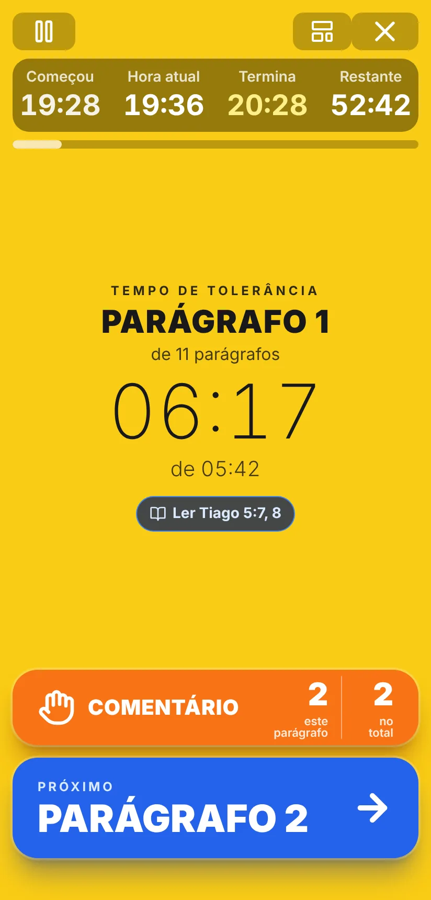
Semáforo: a tela inteira muda de cor.
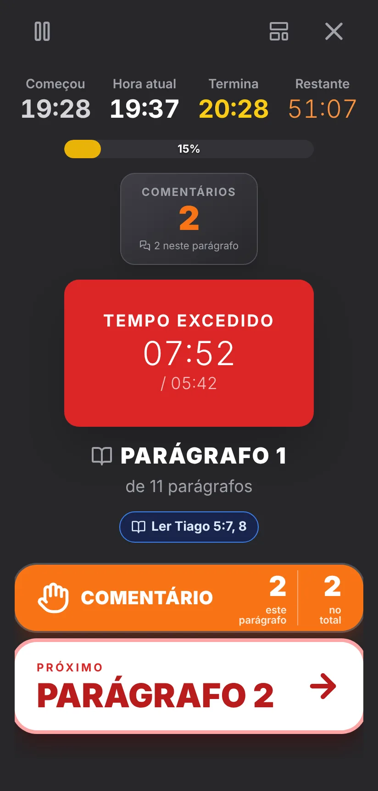
Clássico: com o contador de comentários.
No final, o botão grande diz “Encerrar estudo” e depois “Ver relatório”.
10Como os tempos são calculados
Leitura de cada parágrafo = suas palavras ÷ a velocidade de leitura (150, 180 ou 210 palavras por minuto). Cada texto, imagem, nota ou ponto principal soma também o tempo por resposta (no mínimo 30 segundos; 35 se não mudar) como comentário, porque é a assistência que lê ou comenta.
A introdução e a conclusão têm o tempo das Configurações (1 minuto cada, se não mudar). A conclusão se ajusta ao horário de término: se sobrar tempo depois da recapitulação, fica com tudo; se faltar, fica mais curta.
Comentários: o tempo que sobra é dividido entre todas as perguntas. Os parágrafos longos ou agrupados recebem um pouco mais (o “extra” verde da seção 6).
Durante o estudo: cada vez que você toca em Próximo, o que falta é recalculado para terminar na hora.
Exemplo: num estudo de 60 minutos com 11 parágrafos e 21 perguntas, cerca de 7 minutos vão para a leitura, 2 para a introdução e a conclusão, e cerca de 51 para os comentários: um pouco mais de 2 minutos por pergunta.
11Configurações
Toque em ⚙, em cima, à direita. As configurações ficam salvas no seu aparelho e estão organizadas em quatro abas:
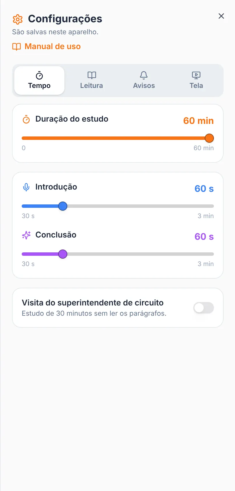
Tempo
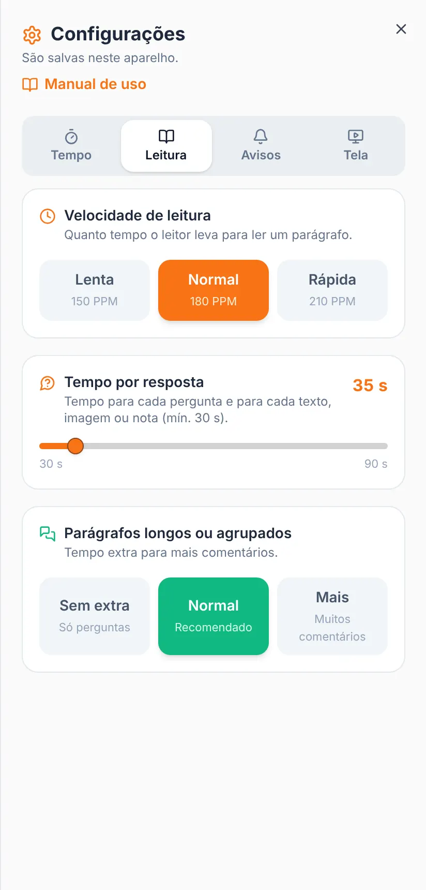
Leitura
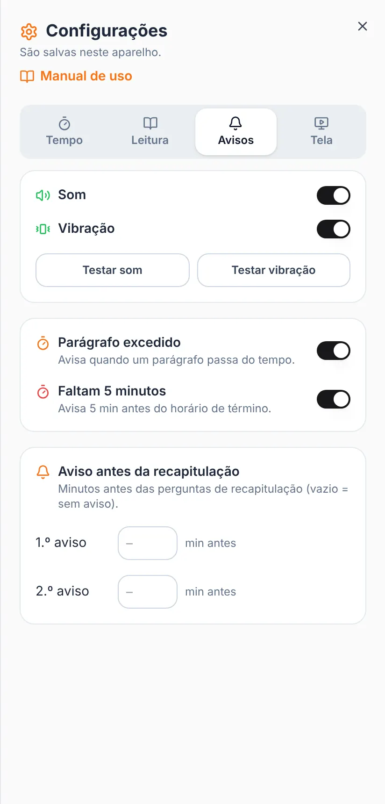
Avisos
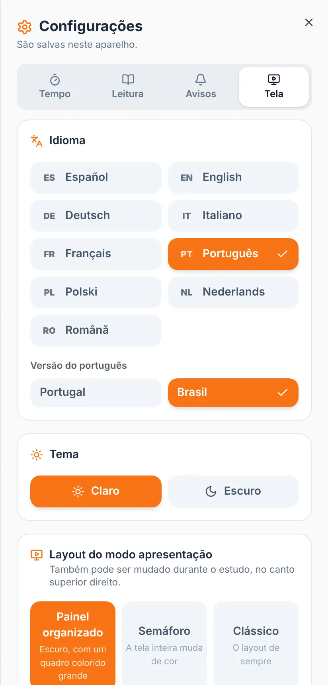
Tela
Aba
O que você pode mudar
Tempo
Duração do estudo (até 60 min). Duração da introdução e da conclusão (de 30 s a 3 min). Visita do superintendente de circuito.
Leitura
Velocidade de leitura do leitor: Lenta (150), Normal (180) ou Rápida (210 palavras/min). Tempo por resposta (de 30 a 90 s; vale também para cada texto, imagem, nota ou ponto principal). Parágrafos longos ou agrupados: Sem extra, Normal ou Mais comentários.
Avisos
Som e vibração (com botões para testar). Aviso de parágrafo excedido, aviso “Faltam 5 minutos” e até dois avisos antes da recapitulação.
Tela
Idioma, tema claro ou escuro (com seis variações de escuro: grafite, preto AMOLED, azul-noite, quente, verde floresta e berinjela; e seis variações de claro: branco, creme, azul-céu, verde-menta, lavanda e cinza-pérola) e o layout do modo apresentação.
Se você mudar a velocidade de leitura ou o tempo por resposta com o estudo em andamento, a mudança vale para o próximo estudo.
12Avisos de som e vibração
Parágrafo excedido: toca quando o parágrafo atual passa do seu tempo.
Faltam 5 minutos: 5 minutos antes da hora de término, com som, vibração e uma mensagem na tela.
Antes da recapitulação: escreva quantos minutos antes das perguntas de recapitulação você quer um aviso (por exemplo, 10 e 5). Deixe em branco se não quiser.
Pouco tempo para a recapitulação: se restarem menos de 20 segundos por pergunta de recapitulação, o aplicativo avisa.
Botão “Próximo” vermelho: o botão para avançar fica vermelho quando uma parte passa do tempo e pisca quando já não dá para recuperar (seção 8).
Verifique se o celular não está no silencioso se quiser ouvir os avisos. A vibração funciona no Android; no iPhone, depende do navegador.
13Visita do superintendente de circuito
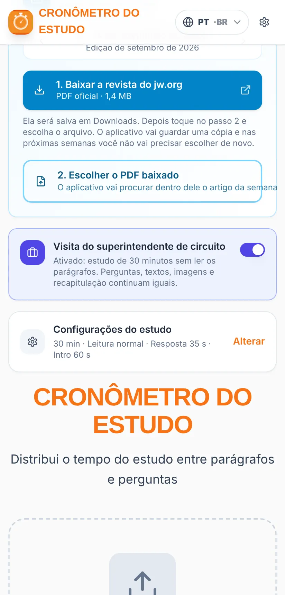
Botão ativado: estudo de 30 minutos.
Na semana da visita, ative o botão “Visita do superintendente de circuito” na tela inicial (ou em Configurações → Tempo). O estudo passa a durar 30 minutos e os parágrafos não são lidos: continuam as perguntas, os textos bíblicos, as imagens e a recapitulação. Lembre-se de desativá-lo depois da visita.
Nessa semana não há leitura dos parágrafos. No tempo previsto de cada parágrafo, os textos para ler, imagens e notas aparecem dentro dos comentários, por exemplo “Texto para ler” ou “Imagem para comentar” (no plural se houver mais de um).
14Idiomas
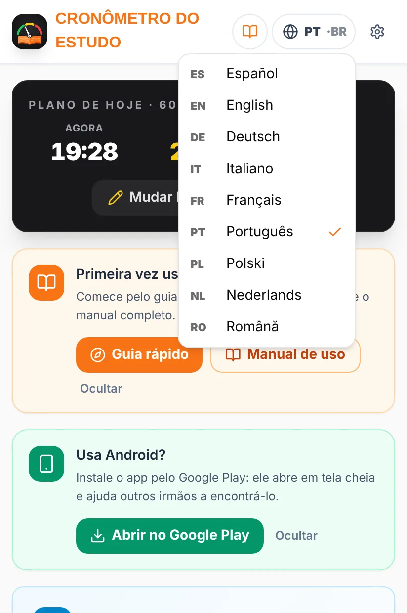
Menu de idiomas.
O aplicativo funciona em espanhol, catalão, basco, galego, inglês, alemão, italiano, francês, português, polonês, holandês e romeno. Mude o idioma com o botão do globo, em cima, ou em Configurações → Tela. Ao mudar o idioma:
todo o aplicativo aparece nesse idioma, com as datas e horas correspondentes;
o botão do jw.org baixa A Sentinela nesse mesmo idioma. É o idioma do aplicativo que decide o idioma da revista;
em português, o aplicativo pergunta uma vez se você prefere a edição de Portugal ou a do Brasil. Você pode mudar isso depois em Configurações → Tela.
Este manual também está disponível em todos esses idiomas: use os botões de idioma no alto da página.
15No final: o relatório e o histórico
Quando você toca em “Encerrar estudo”, o aplicativo salva um relatório com os tempos de cada parte. Ele ajuda a ver o que demorou demais e a melhorar da próxima vez.
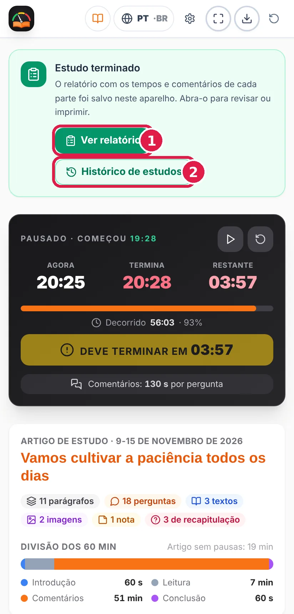
Em cima aparece o cartão “Estudo terminado”.
Ver relatório: abre o relatório deste estudo numa aba separada.
Histórico de estudos: abre a lista de todos os estudos salvos.
O relatório
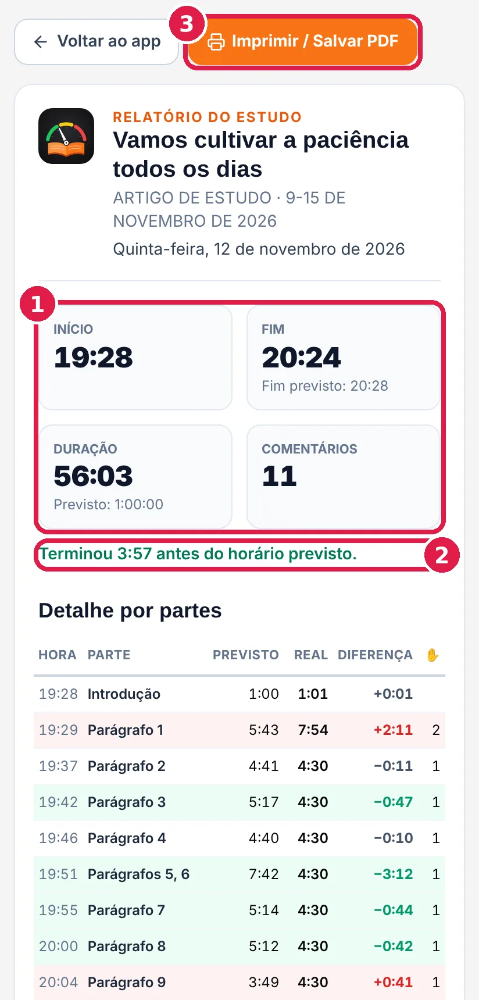
Parte de cima do relatório.
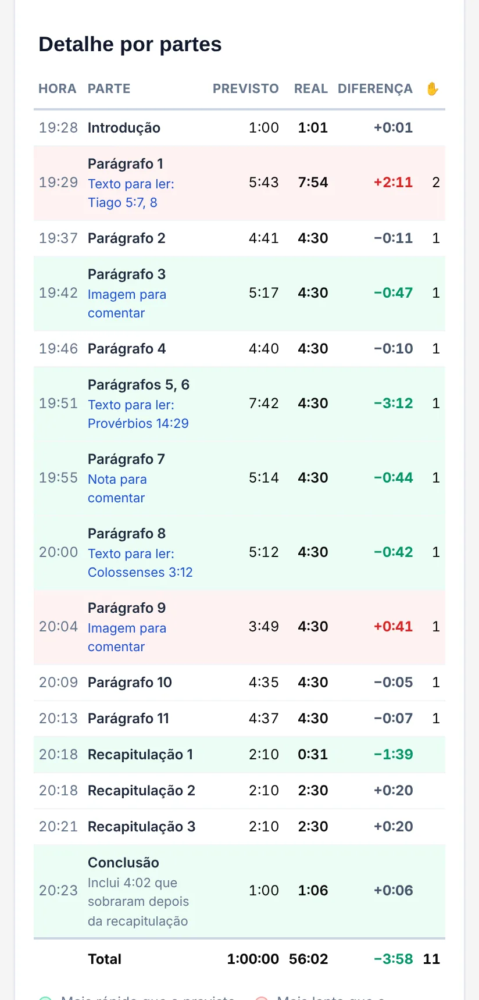
A tabela com cada parte.
Início, fim e duração do estudo, com o horário de término previsto e o total de comentários.
Resumo numa frase, por exemplo “Terminou 3:57 antes do previsto” (em verde) ou “depois” (em vermelho).
Imprimir / Salvar PDF: para imprimir em papel ou salvar como arquivo.
A tabela tem uma linha para cada parte: introdução, cada parágrafo, cada pergunta de recapitulação e a conclusão. Em cada linha você vê:
a hora em que essa parte começou;
Previsto e Real: o tempo do programa e o tempo que realmente foi usado;
Diferença: em verde se foi mais rápido e em vermelho se demorou mais;
✋: os comentários marcados.
Debaixo de cada parágrafo, em azul: os textos para ler (com a citação), as imagens e as notas para comentar.
No computador e ao imprimir, aparecem também as palavras e as perguntas de cada parágrafo. O relatório impresso cabe em uma única página.
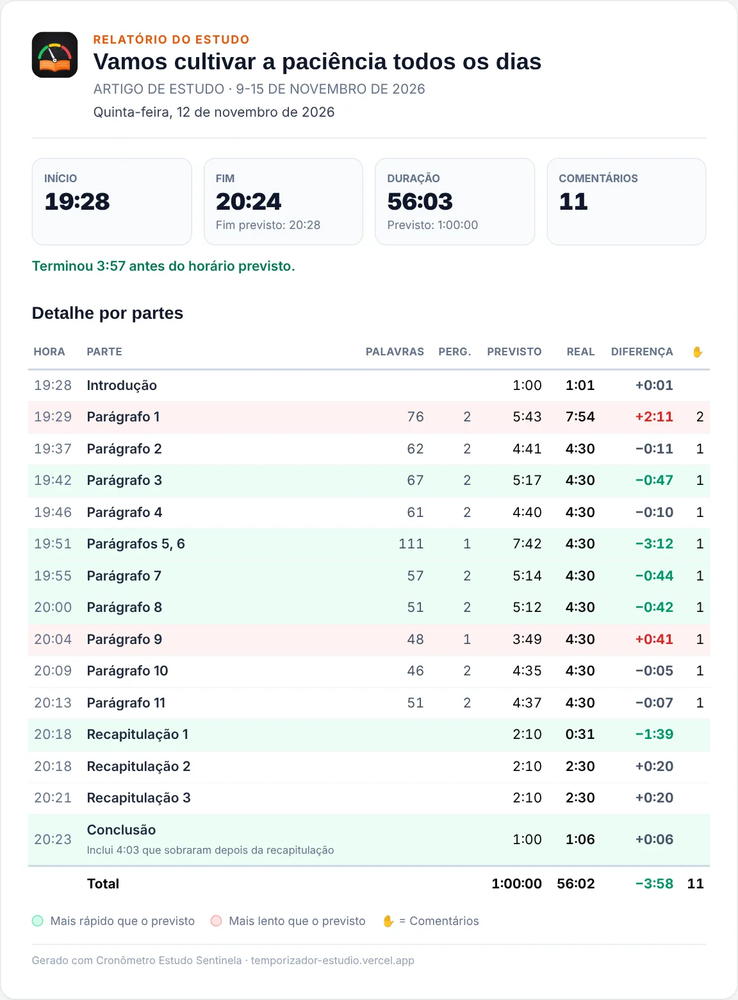
O relatório completo, como aparece no computador ou impresso.
O histórico de estudos
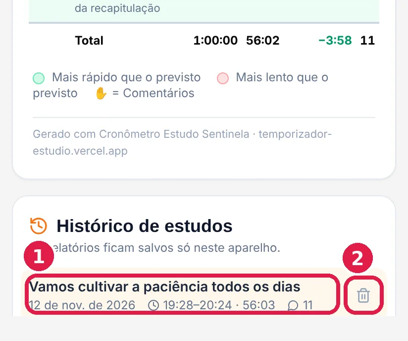
Lista de estudos salvos, embaixo do relatório.
Toque num estudo para ver o relatório dele. Mostra a data, os horários, a duração e os comentários.
Lixeira: para apagar um relatório. Toque uma vez e confirme em “Excluir?”.
Os relatórios ficam salvos só neste aparelho, nunca na internet. São guardados até 100 estudos. Se você apagar os dados do navegador ou do aplicativo, o histórico se perde.
Você também pode abrir o histórico pelo cartão “Histórico de estudos” da tela inicial.
Outras opções
Embaixo do programa estão também as estatísticas de tempo de cada parágrafo.
Com o botão exportar⬇ em cima, você pode salvar o programa como imagem ou PDF.
Para preparar outro estudo, toque em reiniciar↻.
16Perguntas frequentes
Posso dirigir lendo os parágrafos e as perguntas no aplicativo?
Não. O aplicativo os mostra só para calcular os tempos. Para dirigir, use sempre o JW Library ou A Sentinela impressa.
Por que A Sentinela foi baixada em outro idioma?
A revista é baixada no idioma do aplicativo. Mude o idioma com o botão do globo e toque de novo em “Baixar a revista do jw.org”.
Diz que não reconhece o formato do artigo.
Use o PDF oficial de A Sentinela, edição de estudo, baixado do jw.org (o botão “Baixar a revista do jw.org” faz isso por você). PDFs escaneados ou feitos com capturas de tela não podem ser lidos.
Não encontra o artigo da semana na revista.
Verifique se a semana escolhida corresponde a essa edição da revista. Se não, o aplicativo mostra o artigo mais próximo e deixa você escolher outra semana.
Preciso de internet durante o estudo?
Só para baixar a revista. Depois de carregar o artigo, o cronômetro funciona sem conexão.
Cheguei atrasado ou comecei atrasado. O que faço?
Abra o parágrafo em que vocês estão e toque em “Começar daqui”. O aplicativo vai distribuir o tempo que sobra.
O discurso público terminou atrasado.
Antes de começar, toque em “Mudar horário de término” e escreva a hora em que o estudo deve terminar para a reunião acabar na hora. O aplicativo encurta tudo para terminar nessa hora. Essa opção só encurta o estudo: nunca o deixa mais longo.
Os avisos não tocam.
Verifique em Configurações → Avisos se estão ativados, toque em “Testar som” e veja se o celular não está no silencioso.
Que dados o aplicativo guarda?
Só as suas configurações e as revistas que você escolhe guardar, e sempre no seu aparelho. Não há contas nem dados enviados a nenhum servidor. Mais informações na política de privacidade.
Onde vejo os estudos de outras semanas?
No histórico de estudos: toque em “Histórico de estudos” ao terminar um estudo, ou use o cartão verde da tela inicial.
Posso apagar um relatório?
Sim. No histórico, toque na lixeira ao lado do estudo e confirme em “Excluir?”.
Por que a conclusão durou mais do que o previsto?
Se sobra tempo depois da recapitulação, a conclusão fica com esse tempo para terminar na hora. O relatório mostra isso embaixo de “Conclusão”.